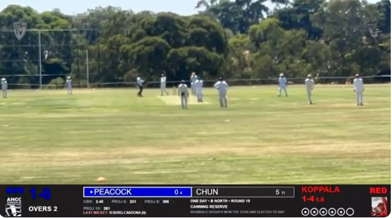
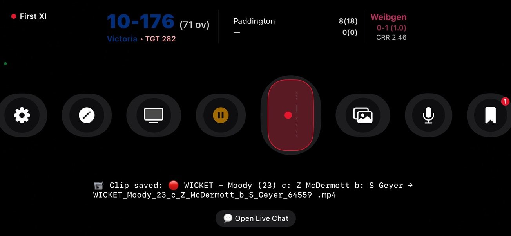
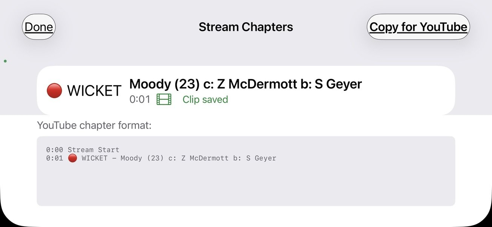
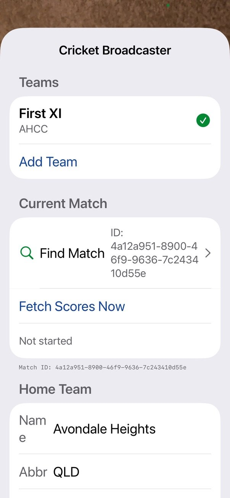

CricStreamr turns an iPhone into a broadcast camera. Tap Go Live and stream the game with a live Play Cricket scoreboard, sponsor logos and automatic highlights — no laptop, no stream keys.
Free · iPhone · Built by Avondale Heights Cricket Club

● LIVEA real CricStreamr broadcast, straight from an iPhone at the ground
Built by volunteers who stream every weekend, for the way club cricket actually works.
CricStreamr creates the YouTube broadcast for you, starts it, and ends it cleanly when you stop.

The overlay updates automatically from Play Cricket, so viewers always know the state of the game.
Big moments are logged as they happen and turned into YouTube chapters, so players and families can jump straight to them.

Quality adjusts automatically when mobile data drops, and the stream reconnects on its own.
Hold the picture through drinks, lunch and tea without ending the broadcast.
Show your sponsors on screen with a rotating slideshow you position yourself.
Stream in 720p or 1080p from the iPhone's main camera, with zoom.
T20, one-day and two-day games — set the overs or let Play Cricket decide.
Set team names, abbreviations and colours once.
Open the game on Play Cricket and paste the link — the match ID is picked up automatically.
Mount the phone, frame the pitch and you're broadcasting.

CricStreamr is free for cricket clubs. Get in touch to join the iPhone beta.